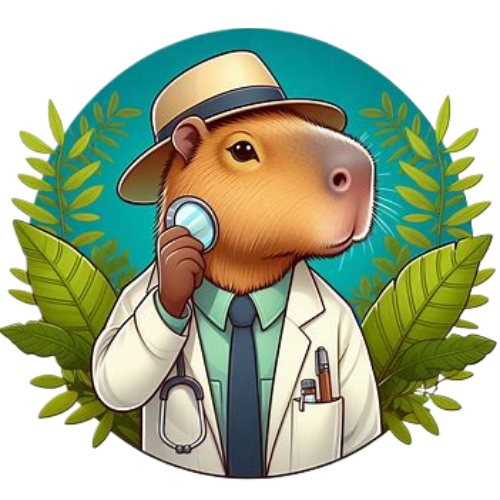

Capypédia
Nos différents lieux de vie vous intéressent ? Vous allez vous rendre compte qu’ils n’ont pas été choisi de manière aléatoire.
Ah, laissez-moi vous parler des différents endroits que nous, les capybaras, appelons maison. Vous voyez, nous sommes des créatures assez adaptables, donc nous pouvons vivre dans une variété d'habitats, du marais tranquille à la lisière de la forêt dense. Chaque environnement a ses propres caractéristiques et défis, mais nous les capybaras, nous nous en sortons plutôt bien, si je puis dire.
Tout d'abord, il y a les vastes plaines inondées qui bordent les rivières et les lacs. Ces zones humides sont comme notre paradis personnel. Nous pouvons nous baigner et nager à notre guise, et il y a toujours beaucoup de nourriture à trouver parmi les herbes et les plantes aquatiques qui poussent près de l'eau. Les prédateurs sont moins nombreux ici, car l'eau nous offre une protection supplémentaire. C'est un endroit paisible et nourrissant pour élever notre famille.
Ensuite, il y a les forêts tropicales denses, où les arbres s'élèvent haut dans le ciel et la lumière du soleil est filtrée à travers le feuillage dense. Ces endroits peuvent sembler un peu intimidants pour certains, mais pour nous, les capybaras, c'est juste un autre endroit où appeler chez nous. Nous sommes assez agiles pour naviguer à travers les sous-bois, et nous pouvons trouver de la nourriture dans les feuilles tendres et les fruits qui poussent sur les arbres. C'est un peu plus risqué en termes de prédateurs, mais nous avons développé des sens aiguisés et une intelligence pour éviter les dangers.
Enfin, il y a les prairies ouvertes et les savanes, où l'herbe ondule à perte de vue et où le soleil brille chaudement sur la terre. Ces endroits sont un peu plus exposés, mais ils offrent beaucoup d'espace pour se déplacer et trouver de la nourriture. Nous pouvons voir loin à l'horizon, ce qui nous permet de repérer les prédateurs potentiels à distance. C'est un environnement différent, mais nous avons appris à y prospérer comme dans les autres.
En fin de compte, que nous vivions dans les marais, les forêts ou les prairies, nous, les capybaras, sommes des maîtres de l'adaptation. Tant que nous avons de l'eau pour nous baigner, de la nourriture à grignoter et de la famille pour nous soutenir, nous pouvons appeler n'importe quel endroit chez nous.